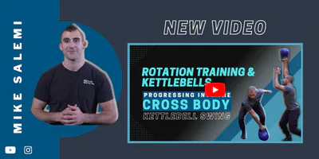

B701 · Train Rotation with Kettlebells - The Cross Body Swing!
Hi {first_name},
Legs, trunk, grip, stability, and coordination all trained in one exercise…I love kettlebells!
I used to have a 600+ pound squat and deadlift BUT to be honest, nowadays my preference is to train like what you’ll see in this video. Don’t get me wrong, brute strength is great, but now that I’m not competing in powerlifting, I want to train, moving through every plane and direction while feeling incredible in the process.
The exercise today teaches your body how to express strength with precision, timing, and coordination. Notice the quick movements and the exact positions you have to hit to keep the kettlebell under control.
I first learned this exercise from Paul Chek back while competing in Kettlebell Sport. Performing the Long Cycle (clean and jerk) so much in training, we used this movement to help me add more rotation into my regime and balance my body out.
Today’s video shows you 3 progressions to get to a cross body swing with a bottoms up lunge as a bonus. Talk about a great exercise!
Watch the video and practice the movement.
 I'll be working on my next series of videos very soon. Hit reply and let me know what topics you’d like me to cover in these weekly videos coming up.
Keep training intentionally, Mike Salemi |